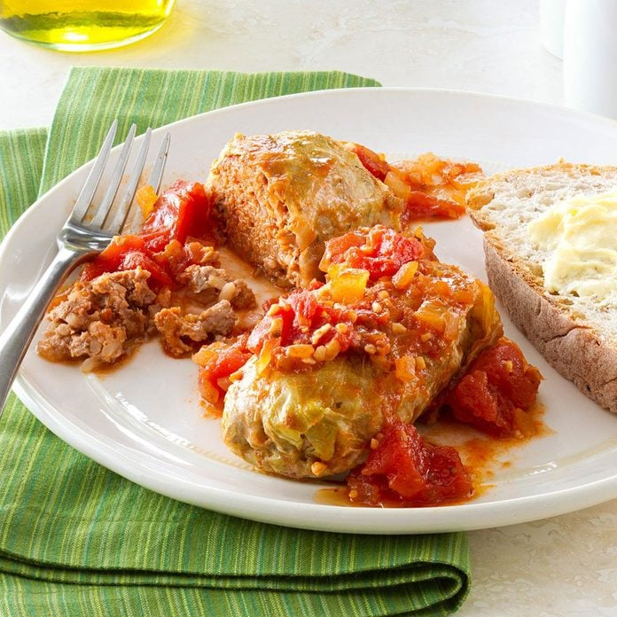

Cabbage Rolls
Original recipe

Time
Prep: 30 min
Cook: 1-1/2 hours
Description
Cabbage rolls, also known as stuffed cabbage or golabki, are a traditional dish consisting of cabbage leaves
filled with a mixture of ground meat (typically pork or beef), rice, and various seasonings. The filled cabbage
leaves are then usually simmered in a tomato-based sauce until cooked. This dish is popular in many cultures,
each with its own variations in ingredients and preparation methods. Cabbage rolls are appreciated for their
comforting flavors and the hearty combination of cabbage and savory filling.
Ingredients
- 1 medium head cabbage
- 1-1/2 cups chopped onion, divided
- 1 tablespoon butter
- 2 cans (14-1/2 ounces each) Italian stewed tomatoes
- 4 garlic cloves, minced
- 2 tablespoons brown sugar
- 1-1/2 teaspoons salt, divided
- 1 cup cooked rice
- 1/4 cup ketchup
- 2 tablespoons Worcestershire sauce
- 1/4 teaspoon pepper
- 1 pound lean ground beef (90% lean)
- 1/4 pound bulk Italian sausage
- 1/2 cup V8 juice, optional
Steps
- In a Dutch oven, cook cabbage in boiling water for 10 minutes or until outer leaves are tender; drain. Rinse
in cold water; drain. Remove 8 large outer leaves (refrigerate remaining cabbage for another use); set
aside.
- In a large saucepan, saute 1 cup onion in butter until tender. Add the tomatoes, garlic, brown sugar and 1/2
teaspoon salt. Simmer for 15 minutes, stirring occasionally.
- Meanwhile, in a large bowl, combine the rice, ketchup, Worcestershire sauce, pepper and remaining onion and
salt. Crumble beef and sausage over mixture and mix well.
- Remove thick vein from cabbage leaves for easier rolling. Place about 1/2 cup meat mixture on each leaf;
fold in sides. Starting at an unfolded edge, roll up leaf to completely enclose filling. Place seam side
down in a skillet. Top with the sauce.
- Cover and cook over medium-low heat for 1 hour. Add V8 juice if desired. Reduce heat to low; cook 20 minutes
longer or until rolls are heated through and a thermometer inserted in the filling reads 160°.
Main page